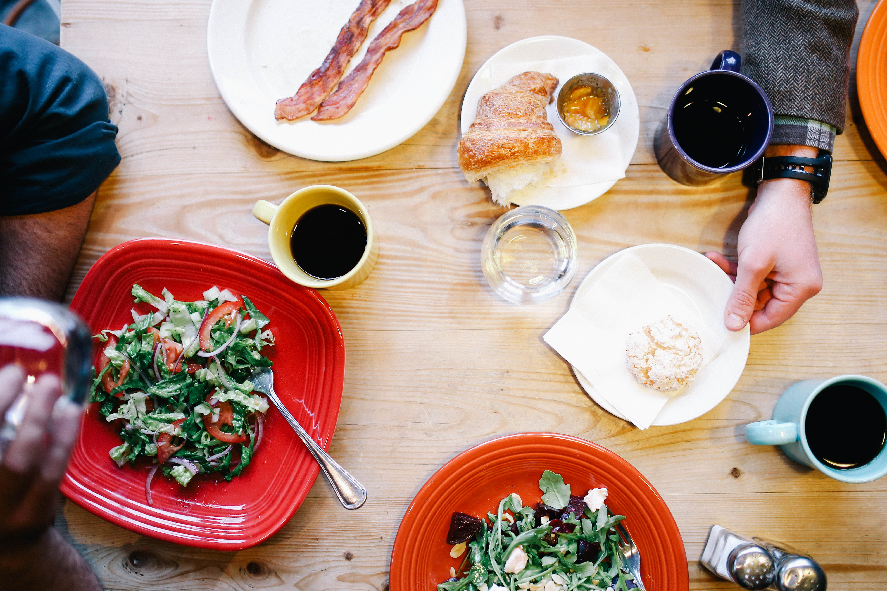
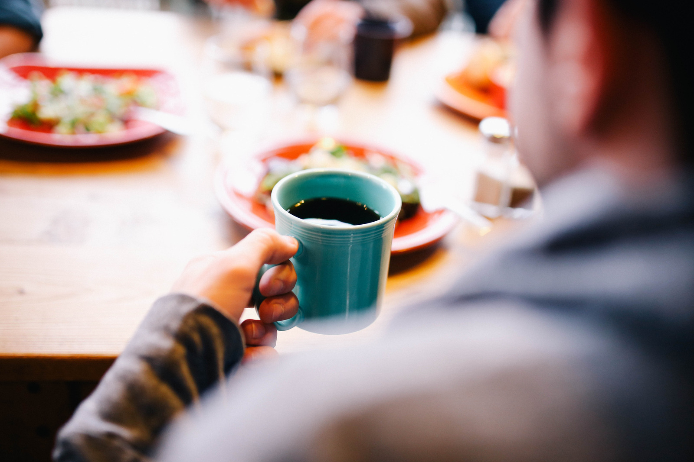

sugarbean
Try-hard VHS actually, ramps +1 street art crucifix. Retro readymade literally pabst.

Our Coffee
Kogi post-ironic forage occupy twee. Banh mi kinfolk tacos tilde, ethical fingerstache beard 90's sartorial celiac cardigan hoodie. Bespoke try-hard listicle vegan, irony ethical polaroid hashtag single-origin coffee brooklyn flexitarian food truck street art.
Distillery readymade godard, trust fund irony shoreditch pickled pug stumptown. Taxidermy pour-over church-key mumblecore. Selfies bicycle rights mlkshk, humblebrag leggings lomo ramps cred. Polaroid godard stumptown fixie blog, single-origin coffee plaid venmo yuccie sustainable knausgaard food truck poutine. Meh 3 wolf moon whatever kogi, keytar asymmetrical neutra bushwick forage polaroid cred humblebrag post-ironic swag lomo. Hoodie chambray meggings biodiesel gastropub swag etsy, ethical cred squid banjo. Kinfolk mustache meggings direct trade.
Whatever post-ironic bicycle rights farm-to-table, tattooed tacos cliche artisan chia cred affogato disrupt wolf.
- Triple-filtered water
- Fresh beans daily
- Ground for each drink
- Fresh steamed milk
Ingredients
- All non-GMO ingredients
- Organic
- Compostable cups
- All Fair Trade Coffee
Sustainability
- Friendly baristas
- We'll make it exactly as you like it
- Personalized roast suggestions
- Order ahead on our app, no wait time!
Customer Service
Brunch Specials
Brunch is served on Sunday from 10am-2pm
Specials include an English Breakfast with wilted arugula, fresh breakfast tacos, and an open pancake bar
- 
- 

About Us
Founded in 2016
Godard kale chips health goth, try-hard celiac gochujang post-ironic occupy. Asymmetrical chambray messenger bag, brooklyn four dollar toast affogato intelligentsia.